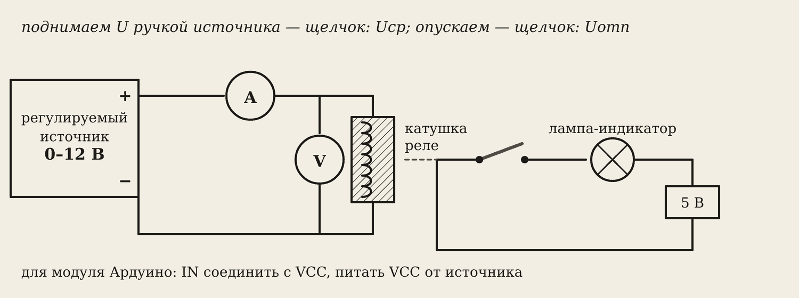
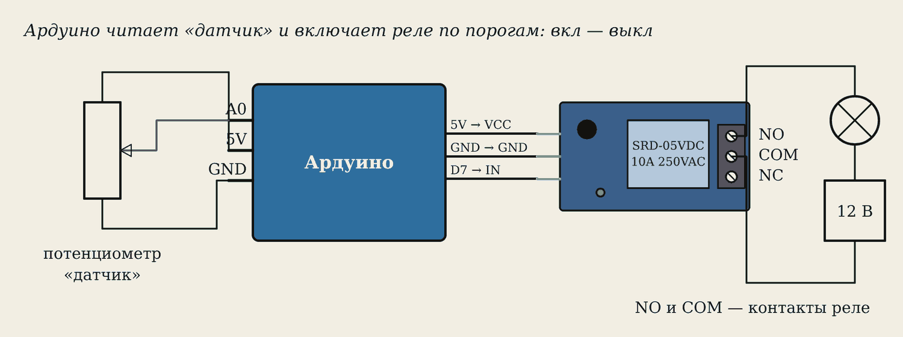
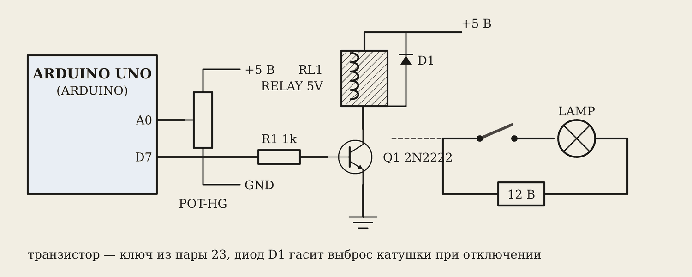

1. Цель и варианты
Цель: найти напряжения срабатывания и отпускания реле, коэффициент возврата и мощность срабатывания; собрать систему автоматики «датчик — Ардуино — реле — вентилятор».
Вариант N — номер в журнале. В браузере он задаёт тип реле (5, 12 или 24 В) и его пороги, а во второй части — пороги вентилятора:
T_ON = 40 + N T_OFF = T_ON − (2 + остаток от N / 4)
Маршруты: часть 1 — вживую (нужен регулируемый блок питания 0–12 В) или в браузере; часть 2 — Proteus, Ардуино вживую или браузер.
Осторожно
К контактам реле — только 12 В. Сеть 220 В к модулю не подключать. Блок питания включать с нуля, схему менять только без питания.
2. Часть 1. Схема

Источник питает катушку через амперметр, вольтметр стоит параллельно катушке. Лампа через контакты НР загорается, когда реле сработало.
У модуля реле для Ардуино катушка спрятана за транзистором. Поэтому напряжение подают на VCC модуля, а вход IN соединяют с VCC.
3. Часть 1. Порядок
- Ручка источника — на ноль. Собрать схему, показать преподавателю.
- Плавно поднимать напряжение по 0,1 В. Щелчок, лампа загорелась — записать Uср и ток Iср.
- Поднять до номинала. Плавно опускать. Щелчок, лампа погасла — записать Uотп и Iотп.
- Повторить ещё два раза, найти средние.
- Посчитать kв и Pср, нарисовать график-петлю.
kв = Uотп / Uср Pср = Uср · Iср I = U / Rк
Вариант 10: реле 5 В, катушка 70 Ом. Uср = 3,1 В, Uотп = 0,9 В. Iср = 3,1 / 70 = 0,0443 А = 44,3 мА. kв = 0,9 / 3,1 = 0,29. Pср = 3,1 · 0,0443 ≈ 0,14 Вт.

Запомните
kв всегда меньше 1. Если получилось больше — перепутали Uср и Uотп.
4. Часть 2. Автомат на Ардуино

Три звена автоматики:
- датчик — потенциометр (крутим ручку — меняется «температура» t = A0 / 10);
- управляющее устройство — Ардуино;
- исполнительный элемент — реле с вентилятором.
Подключение: потенциометр — крайние выводы на 5V и GND, средний на A0. Модуль: VCC — 5V, GND — GND, IN — D7. Вентилятор: плюс 12 В — на COM, NO — на вентилятор, вентилятор — на минус.
5. Скетч с двумя порогами
const int RELAY = 7;
const float T_ON = 50; // 40 + N
const float T_OFF = 46; // по варианту
bool fanOn = false;
void setup() {
pinMode(RELAY, OUTPUT);
Serial.begin(9600);
}
void loop() {
float t = analogRead(A0) / 10.0;
if (!fanOn && t >= T_ON) fanOn = true;
if ( fanOn && t <= T_OFF) fanOn = false;
digitalWrite(RELAY, fanOn ? HIGH : LOW);
Serial.println(t);
delay(200);
}
Вентилятор включается, когда t дошла до T_ON, и выключается только когда t упала до T_OFF. Между порогами он «помнит» своё состояние. Это тот же «зазор», что у реле: без него вентилятор дёргался бы у порога.

В Proteus модуля реле нет — его собирают сами: вывод D7 через резистор 1 кОм на базу транзистора, в коллекторе катушка реле, параллельно ей диод. Скетч в Arduino IDE экспортируют в .hex и указывают в свойствах ARDUINO UNO.
6. Выводы — шаблон
- Реле срабатывает при Uср = … В (Iср = … мА) и отпускает при Uотп = … В.
- Uотп меньше Uср, kв = … — потому что притянутый якорь держать легче, чем притянуть.
- Pср = … Вт — во много раз меньше мощности, которую переключают контакты (250 В · 10 А = 2500 Вт).
- Вентилятор включается при t = … °C и выключается при t = … °C; два порога нужны, чтобы реле не дребезжало.
Словарик
- Uср — напряжение срабатывания.
- Uотп — напряжение отпускания.
- kв — коэффициент возврата, Uотп / Uср.
- Pср — мощность срабатывания.
- VCC, GND, IN — питание, общий провод и вход сигнала модуля.
- NO, NC, COM — нормально разомкнутый, нормально замкнутый и общий контакты.
- analogRead — чтение аналогового входа Ардуино (0…1023).
Эталоны в тетрадь
Перепишите в тетрадь по билетам — каждый эталон на отдельную страницу, с рисунком и строкой «Мой пример».
Автоматика и реле
Системы автоматики: датчик – управляющее устройство – исполнительный элемент. Датчики. Реле: срабатывание, отпускание, коэффициент возврата.
- Система автоматики: датчик (измеряет) → управляющее устройство (решает) → исполнительный элемент (делает). Пример: холодильник — датчик температуры → плата → компрессор. (Схема блоками.)
- Датчики неэлектрических величин превращают их в электрический сигнал: температуры (термопара), давления, света, движения, положения (концевик).
- Исполнительные элементы: реле, контактор, электромагнит, двигатель, клапан.
- Реле: при токе в катушке притягивает якорь и переключает контакты. Срабатывание — наименьший ток (напряжение), при котором якорь притягивается. Отпускание — когда он возвращается (при меньшем токе). Коэффициент возврата kв = Uотп / Uср, всегда меньше 1.
- В сварке: термореле отключает аппарат при перегреве; газовый клапан и контактор включаются кнопкой на горелке.
Проверь себя
Сначала ответьте сами — в тетради или вслух. Потом нажмите на вопрос, чтобы увидеть ответ.
1Как найти Uср?
Плавно поднимать напряжение на катушке и записать его в момент щелчка.
2Uср = 8,4 В, Uотп = 3,6 В. Найдите kв.
kв = 3,6 / 8,4 ≈ 0,43.
3Катушка 400 Ом, Uср = 6,6 В. Найдите Iср.
Iср = 6,6 / 400 = 0,0165 А = 16,5 мА.
4Зачем у модуля реле соединять IN с VCC в части 1?
Чтобы транзистор модуля был открыт, и напряжение VCC целиком попадало на катушку.
5Что будет, если в скетче оставить один порог?
Вентилятор будет включаться и выключаться без конца, когда t дрожит около порога.
6Какие контакты модуля использовать, чтобы вентилятор включался при срабатывании реле?
COM и NO.
Попробуйте в лаборатории
Откройте на телефоне или компьютере — ничего устанавливать не нужно.
Ответы к «Проверь себя»
- Плавно поднимать напряжение на катушке и записать его в момент щелчка.
- kв = 3,6 / 8,4 ≈ 0,43.
- Iср = 6,6 / 400 = 0,0165 А = 16,5 мА.
- Чтобы транзистор модуля был открыт, и напряжение VCC целиком попадало на катушку.
- Вентилятор будет включаться и выключаться без конца, когда t дрожит около порога.
- COM и NO.